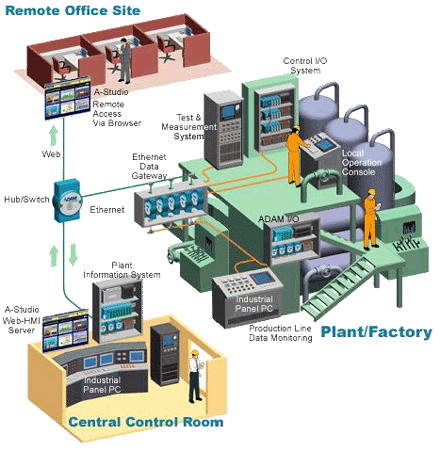
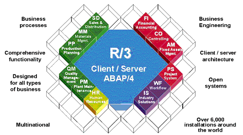

Factory Automation
Automation is information and it not only ends jobs in the world of work, it ends subjects in the world of learning. It does not end the world of learning. The future of work consists of earning a living in the automation age. This is a familiar pattern in electric technology in general. It ends the old dichotomies between culture and technology, between art and commerce, and between work and leisure. (Chapter 33)
Walk onto any major factory floor today and you will not find human workers driven by a straw boss, but a sea of industrious robots driven by computer code. The human workers are sitting behind computer consoles in a glass room monitoring processes controlled by millions of lines of computer code. These processes can be anything from spraying clearcoat on an automobile body to etching channels in a computer chip. The operators in the glass room are not specialists. Since they control all phases of synchronized production they must have comprehensive and intimate knowledge of everything happening on the factory floor, of the product, and of the end-user of the product. The medium of production, automation, is macro-level information, in the sense that the automobile is information, i.e., it is a message that changes human perception, thought and behavior. Macro-level information that doesn't pass this pragmatic test is not really information, it is cognitive noise.

Automation of Business Processes
Office Automation includes processes as simple as automatic justification and kerning of text in word processing to totally integrated corporate management systems like SAP R/3. American productivity has increased by 60% because management boldly invested in information technology in the 1960s.
